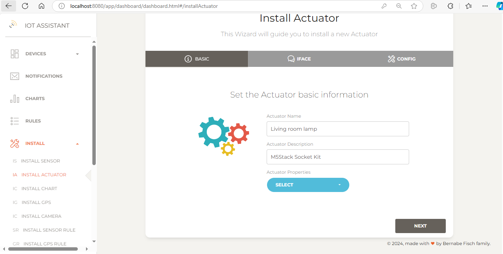
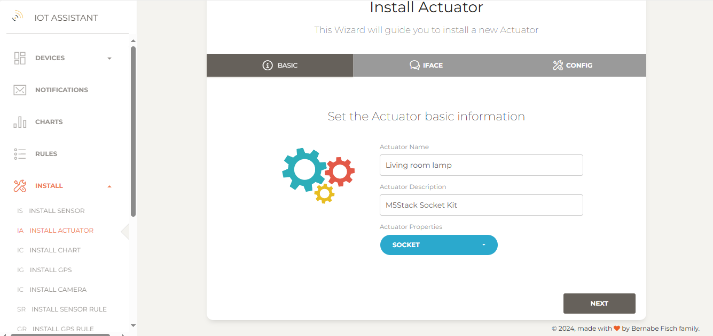
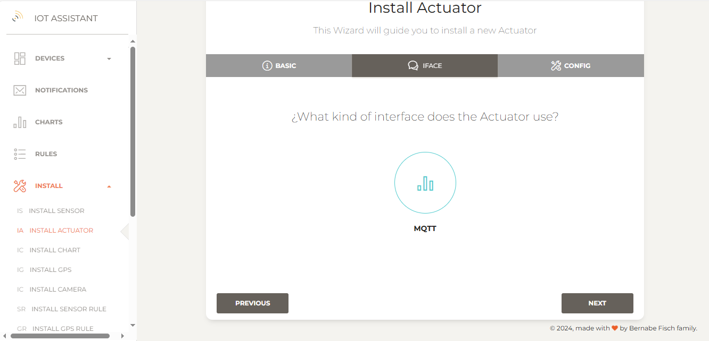
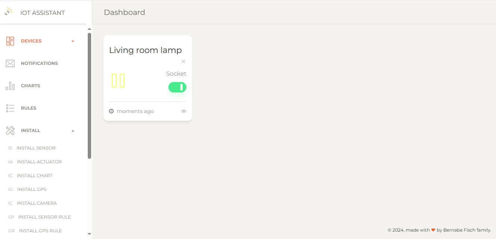

Managing actuators
Installing a MQTT actuator
To install a MQTT actuator go to Install > Install actuator in the left navigation bar to open the setup wizard.
1 - Enter a name and description for the new actuator
{kind=link}
2 - Select the actuator properties (e.g Socket) and click Next
 3 - Select an interface. For a MQTT actuator, choose MQTT and click Next {kind=link}
{kind=link}
4 - In the next step, confirm the settings provided. Optionally, set a watchdog interval to receive notifications if the actuator fails to communicate its value within a specified time.
{kind=link}
5 - Finally, click Finish to proceed. If everything is set up correctly, you'll be redirected to the actuators page, where the installed actuators are listed.
On this page, actuators values are shown as Unknown if no value has been published yet. Otherwise, the last published value and its date are displayed. From here, you can also disable the watchdog or delete the actuator.
{kind=link}
Setting a new value
From the actuators page use the UI controls provided to change any actuator value.
{kind=link}
The MQTT actuator
The MQTT actuator should publish values to the same broker that IoT Assistant is connected to (see this guide for broker configuration).
Topic
Actuator values should be published to actuator/{actuator name} with {actuator name} matching the name given during installation. For example, an actuator named "Living room lamp" would use the topic:
actuator/Living room lamp
JSON
The message published by the actuator should be a JSON string containing all actuator properties we selected during its installation with their current values.
Each value shoud be either a float (e.g "33.47") or a boolean ("true" or "false") depending on the property's type.
For the actuator we installed above a valid JSON message would look like this:
{"Socket" : "true"}
The actuator should also subscribe to this topic: actuator/{actuator name}/value to receive value updates. When the actuator value is changed in IoT Assistant, the actuator receives a JSON containing only the property and the new value to be set
Topic : actuator/Living room lamp/value
Message : {"Socket" : "false"}